Abstract
A2 MissionLab is a public-data engineering reconstruction of Artemis II. The project ingests NASA-published trajectory products, combines them with planetary ephemerides and public mission reporting, reconstructs mission geometry and operational timelines, builds low- and medium-fidelity engineering models for atmospheric entry and the space environment, analyzes environmental time series with robust statistics, and expresses every conclusion with an explicit evidence boundary. The purpose is not to reproduce private NASA flight dynamics, navigation filters, flight rules, or Mission Control transcripts. It is to show how far careful engineering can go with public evidence, and just as importantly, to identify where the public record stops.
The resulting repository spans flight dynamics, lunar geometry, communications, GNC architecture, propulsion and trajectory corrections, entry/descent/recovery, ECLSS and environmental records, space weather and radiation context, lunar science, Mission Control discipline perspectives, decision-thread reconstruction, and publication tooling. Phase 2 alone contains 58 observed successful pipeline steps in the repository closure manifest. The public web application presents these products as an interactive mission experience; this Technical Report carries the deeper methods, equations, provenance, assumptions, limitations, and reproducibility record.
- Motivation
- Public-data methodology
- Mission clock
- Trajectory ingestion & OEM parsing
- SPICE & lunar geometry
- SOI & pericynthion
- Communications geometry
- GNC architecture
- Maneuvers & propulsion
- Atmospheric entry
- Convective heating
- Thermal protection
- ECLSS & environmental data
- Statistical change/anomaly analysis
- Space weather & radiation
- Lunar science
- Mission Control perspectives
- Decision reconstruction
- Evidence taxonomy
- Software architecture
- Reproducibility & validation
- Selected results
- Limitations
- Implications
- Future work
1. Motivation
Human spaceflight missions produce many different public artifacts: trajectory state files, mission updates, images, audio, engineering descriptions, science products, network explanations, environmental datasets, and postflight reports. Individually, those artifacts answer narrow questions. The engineering challenge is to connect them without pretending they are more complete than they are. A trajectory state tells us where a published solution places Orion; it does not reveal Orion’s internal navigation filter. A public mission update may say that a burn occurred; it does not necessarily disclose every thruster, control law, or targeting constraint. A thermal correlation can estimate convective heat flux; it is not heat-shield telemetry.
MissionLab therefore treats Artemis II as a systems-integration case study. The same mission clock is used to correlate flight dynamics, communications, crew observations, trajectory corrections, entry events, environmental records, and Mission Control perspectives. This allows a visitor to move from “what happened?” to “what physical or operational mechanism explains it?” and finally to “what can the public evidence actually support?”
2. Public-data methodology
The analysis follows a repeated pattern: acquire a public artifact; retain its source and precision; normalize it into an explicit schema; validate structural assumptions; compute only quantities that the inputs support; correlate derived results with independently reported events; and publish the result with a provenance class. NASA-reported facts are kept separate from MissionLab-derived geometry and from model output. Unknowns remain unknown.
This distinction is not cosmetic. It controls the language of the project. If a NASA article gives an event only to the nearest minute, the website does not silently promote that to a second-level timestamp. If a derived Earth-center lunar-occultation boundary differs from a NASA operational communications window, both are shown because they answer different questions. If a maneuver occurs after a communications anomaly, the sequence is preserved without declaring the communications event to be the cause of the maneuver.
| Evidence class | Meaning in MissionLab | Example |
|---|---|---|
| NASA REPORTED | An authoritative NASA/ESA public source explicitly publishes the fact or event. | Launch time, a public maneuver time, a public crew observation. |
| MISSIONLAB DERIVED | The project reproducibly calculates a result from public source data. | Lunar closest approach refined from public OEM states plus SPICE geometry. |
| MODELED | An analytical or engineering model produces the quantity under stated assumptions. | Sutton–Graves convective heating using modeled density and public entry kinematics. |
| INFERRED | A bounded reconstruction is supported by evidence but is not directly published as an as-flown measurement. | Operational interpretation that is consistent with timing and documented architecture but lacks a direct public telemetry record. |
| UNKNOWN / NOT PUBLIC | The curated public evidence cannot establish the answer. | Burn-specific engine assignment when public sources only establish propulsion architecture. |
3. Shared mission clock
The shared clock begins at the launch epoch, 2026-04-01 22:35:12 UTC. Mission Elapsed Time is computed as the difference between an event timestamp and this epoch. A common clock prevents one domain from drifting into its own timeline: communications events, lunar observations, burns, entry milestones, and environmental records can all be compared on the same temporal spine.
The public record has mixed precision. Some events are known to the second, some to the minute, some only by date or relative order. MissionLab carries that precision as metadata rather than formatting everything as if it were equally exact. This matters especially for correlations: a second-level derived geometry should not be treated as proof that a minute-level public report occurred at that derived second.
4. Trajectory ingestion and OEM parsing
NASA’s public Orbit Ephemeris Message products provide timestamped state vectors that can be parsed into position and velocity histories. MissionLab’s ingestion code lives in scripts/ingestion/parse_oem.py. The parser converts text products into structured states while preserving the product identity and time tags. Downstream scripts compare successive OEM products rather than treating them as an immutable telemetry stream.
A useful distinction is the difference between a published orbit solution and a spacecraft sensor channel. Public OEM solutions can change between releases because the public trajectory product has been regenerated with new information or a different solution epoch. A difference between two OEM solutions is therefore not automatically a measured navigation error and is not a direct measurement of a burn’s delta-v. Likewise, file creation time does not by itself prove when a maneuver was assimilated.
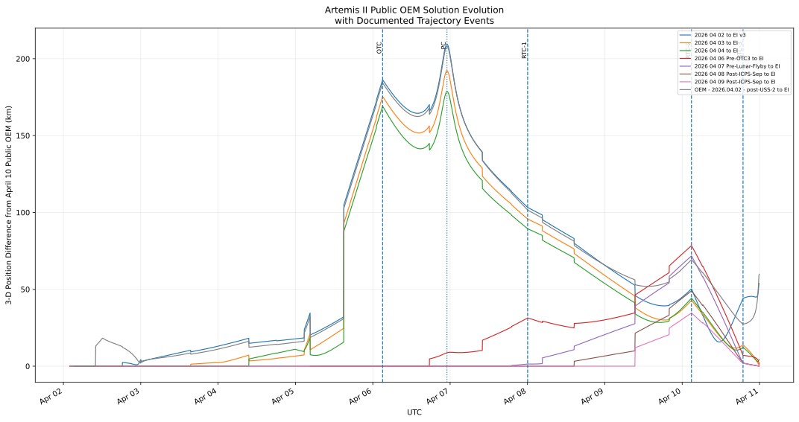
5. SPICE and lunar geometry
To ask questions relative to the Moon, Earth, or Sun, the spacecraft state must be combined with planetary ephemerides. MissionLab uses SPICE through spiceypy and the repository’s documented NAIF kernel set. The lunar geometry processing stage computes Moon-relative position, distance, speed, and radial velocity from the public trajectory states and planetary ephemerides.
The geometry pipeline illustrates a general data-science pattern: join heterogeneous sources in a shared coordinate/time system, derive physically meaningful features, then validate those features against expected behavior. For closest approach, for example, the sign of Moon-relative radial velocity changes around pericynthion. MissionLab refines the minimum instead of reporting only the coarsest sampled state.
6. Sphere of influence and refined pericynthion
Mission phase classification uses a chosen lunar sphere-of-influence boundary documented in the repository. Crossing times are interpolated from the public trajectory states rather than claimed as onboard event telemetry. With that boundary, MissionLab reconstructs entry at 2026-04-06 04:38:07.532302 UTC and exit at 2026-04-07 17:23:41.922211 UTC, for approximately 36.76 hours inside the selected lunar SOI.
The refined lunar closest approach occurs at 2026-04-06 23:00:46.177998 UTC. The reconstructed Moon-center distance is 8,281.938 km, corresponding to a mean-radius altitude of 6,544.538 km, with Moon-relative speed about 1.381073 km/s. These are MissionLab-derived quantities based on the public trajectory and geometry model. They should be read as a reproducible reconstruction, not as a private flight-dynamics console value.
7. Communications geometry, DSN, NSN, and O2O
Artemis II communications cannot be reduced to a single “signal on/off” variable. Near Earth, NASA’s Near Space Network is relevant; deep-space operations use the Deep Space Network; the Orion Artemis II Optical Communications System demonstration is a separate optical link experiment. RF availability, optical-demonstration availability, ground-station visibility, antenna pointing, link margin, scheduling, and occultation geometry are related but not interchangeable.
MissionLab reconstructs a geocentric Earth–Moon–Orion line-of-sight occultation and separately models topocentric DSN geometry. The Earth-center calculation derives an occultation interval of approximately 22:43:22.462 to 23:19:56.488 UTC, about 36.57 minutes. NASA’s public operational reference gives loss of signal at about 22:44 and planned acquisition around 23:25, roughly a 41-minute communications window. The difference is useful rather than embarrassing: an Earth-center geometric boundary is not the same quantity as station-specific operational availability.
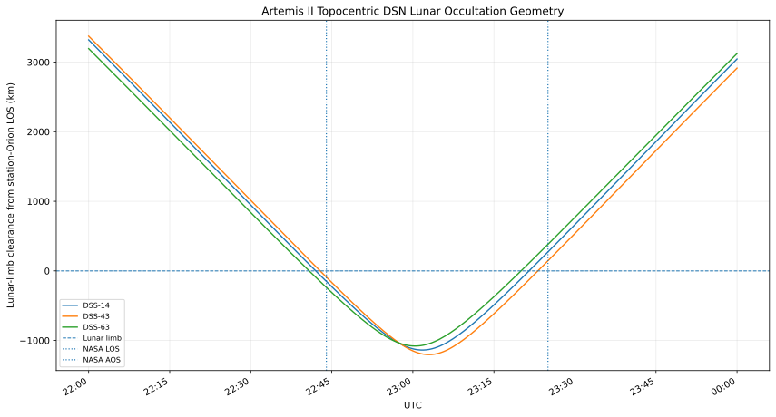
Expected lunar occultation is also different from an anomaly. The return-link loss on Flight Day 9 is treated separately in the communications evidence. Temporal sequence is preserved, but MissionLab does not assert that a communications event caused a later burn or that a troubleshooting action proves root cause.
8. GNC architecture and navigation-state boundaries
The GNC reconstruction separates three related functions. Navigation estimates spacecraft state from measurements. Guidance defines desired motion or targeting objectives. Control turns state/target error and pilot or automation commands into actuator requests. The public architecture identifies star trackers, IMUs, GPS receivers, a barometric altimeter, an optical navigation camera, Sun sensors, Deep Space Network tracking support, vehicle-management computers, translational and rotational hand controllers, and propulsion effectors.
The information flow is best understood as a loop: sensors and external tracking produce measurements; navigation forms a state estimate; guidance defines a target; control computes a response; effectors create forces and torques; the spacecraft moves; and new measurements close the loop. The actual Orion software source code, detailed estimation filter, control law, and internal gains are not exposed by the curated public evidence, so MissionLab does not manufacture them.

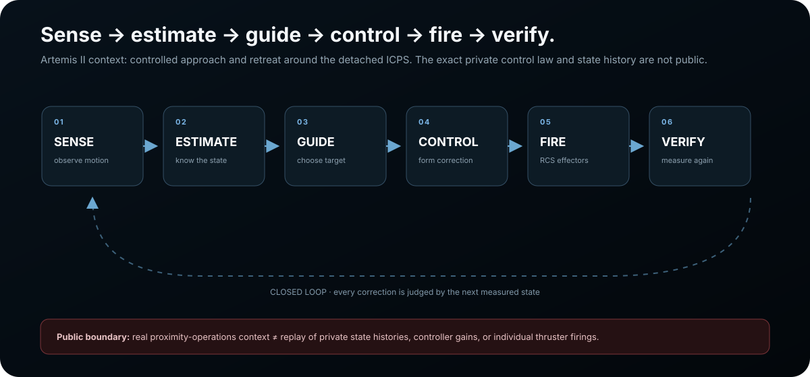
Manual control
The public record supports meaningful manual-control examples. NASA reported that the approximately 70-minute proximity-operations demonstration was successfully completed with controlled approach and retreat maneuvers around the detached ICPS, followed by an automated departure burn. Flight Day 4 included a 41-minute manual-piloting demonstration. NASA later reported that flight controllers elected to forgo the additional Flight Day 8 manual-piloting demonstration. The rotational hand controller commands attitude axes; the translational hand controller commands linear axes. Three-degree-of-freedom and six-degree-of-freedom modes describe the available motion/control dimensions, not a disclosure of the underlying control law.
9. Trajectory corrections and propulsion
A trajectory correction maneuver is a small velocity change applied early enough that the future trajectory evolves toward a desired arrival or entry condition. Over long coast arcs, a small delta-v can translate into a large spatial change later. This is why flight-dynamics targeting is not just “point at the Moon”: the correction must protect geometry at future constraints, including lunar encounter and Earth return.
The public maneuver record illustrates plan-versus-execution reasoning. OTC1 and OTC2 were cancelled because the trajectory was already sufficiently accurate; cancellation is not failure. OTC3 executed on 2026-04-06 at 03:03 UTC for about 17.5 seconds. RTC1 executed 2026-04-08 00:03 UTC for about 15 seconds and approximately 1.6 ft/s; RTC2 at 2026-04-10 02:53 UTC for about 9 seconds and approximately 5.3 ft/s; RTC3 at 18:53 UTC for about 8 seconds and approximately 4.2 ft/s.
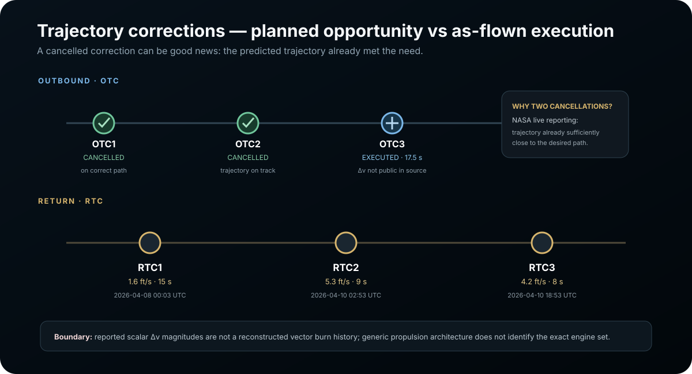
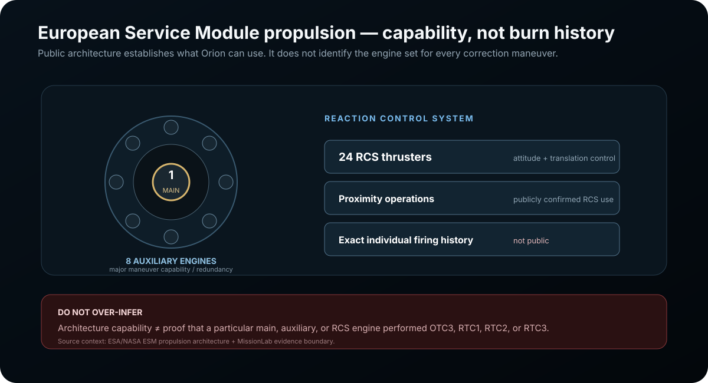
The European Service Module propulsion architecture establishes available engine classes and reaction-control capability. That architecture does not prove which exact engine executed every correction. For example, the curated public evidence does not establish a specific engine assignment for RTC2, so MissionLab leaves that field unknown. This is a deliberate credibility constraint.
10. Atmospheric entry, descent, and recovery
Entry is a coupled flight-dynamics, atmosphere, aerothermodynamics, communications, and recovery problem. MissionLab treats it as a sequence rather than three disconnected plots. Entry Interface is anchored at 2026-04-10 23:53 UTC. As Orion encounters increasing atmospheric density, Earth-relative speed falls, Mach number evolves, dynamic pressure rises and then falls, deceleration changes, convective heat flux peaks, plasma can disrupt radio communications, and the vehicle transitions to parachute descent and ocean recovery.
The underlying plots must be interpreted together. Speed versus time shows kinetic energy being removed from the vehicle. Altitude versus time establishes the atmospheric depth and entry shape. Flight-path angle describes the direction of the velocity vector relative to the local horizontal. Dynamic pressure, approximately q = 0.5 ρ V², combines density and speed; it can rise even while speed is falling because density is increasing rapidly. Mach number depends on both vehicle speed and the local speed of sound.
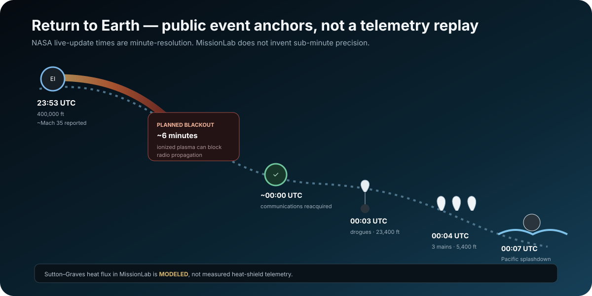
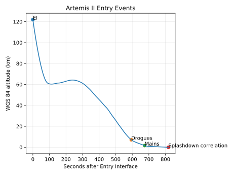
The public minute-level sequence places communications reacquisition around 00:00 UTC on April 11, drogue deployment around 00:03, main parachutes around 00:04, and splashdown around 00:07. Minute-level public times are presented as minute-level values rather than invented seconds.
11. Sutton–Graves convective heating reconstruction
The entry-heating model uses the stagnation-point Sutton–Graves correlation:
Here q̇ is convective heat flux, ρ is atmospheric density in kg/m³, Rₙ is nose radius in meters, V is Earth-relative velocity in m/s, and k is the correlation coefficient. The repository model uses k = 1.74153×10⁻⁴ and a reference radius of 6.035 m derived from an Orion/EFT-1 heritage geometry reference.
The cubic velocity term is the most important intuition. If velocity changes by ten percent while the other terms stay fixed, the velocity contribution changes by roughly thirty-three percent because it is cubed. Density enters through a square root, so the model balances a rapidly decreasing velocity against a rapidly increasing atmospheric density. That interaction creates a distinct heating-history shape rather than a monotonic increase all the way to the surface.
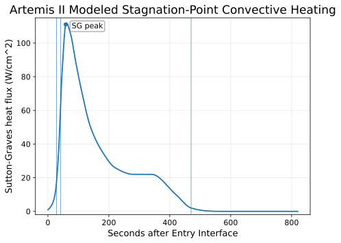
The model is explicitly low fidelity: cold-wall correlation, simplified geometry, Earth-relative speed approximation with no wind, and continuum/hypersonic applicability checks. It does not model radiative heating, finite wall temperature, Avcoat ablation, pyrolysis, blowing, recession, catalytic behavior, or full non-equilibrium chemistry. MissionLab therefore labels the output as model-derived convective heat flux, not “actual heat shield heating.”
12. Thermal protection and physical interpretation
A thermal-protection system exists to manage much more than the scalar output of one correlation. Material response involves conduction, surface chemistry, recession, pyrolysis gases, char, internal structure, manufacturing variation, and mission-specific margins. Public TPS evidence can support discussion of architecture, material heritage, observed postflight condition, and entry-profile context; it does not expose every internal thermal sensor or qualification model.
MissionLab’s TPS work intentionally places physics next to the evidence boundary. Entry-profile loft/rebound behavior changes the time history of heating, which matters even if two cases have similar peak values. Integrated heat load is the time integral of heat flux, so both magnitude and duration matter. This is why peak-only comparisons are incomplete.
13. ECLSS, waste-management evidence, and environmental records
Human spaceflight engineering also depends on habitability, environmental control, consumables, and contingency capability. MissionLab’s Phase 3 work normalizes Orion environmental records and separately reconstructs publicly reported waste-management issues. The public record includes a Flight Day 1 toilet fault indication that was troubleshot and returned to normal operation, plus a Flight Day 4 wastewater vent-line issue that drove heater use, attitude considerations, contingency posture, and continued engineering assessment. Public recovery of function does not reveal a private confirmed root cause, so the project does not invent one.
The environmental analysis is especially useful as a software/data example because it begins with a large normalized table rather than a hand-written event list. The analysis script expects 75,396 normalized records across temperature, relative humidity, and dew-point channels from two logger serials, then moves to a regular analysis grid.
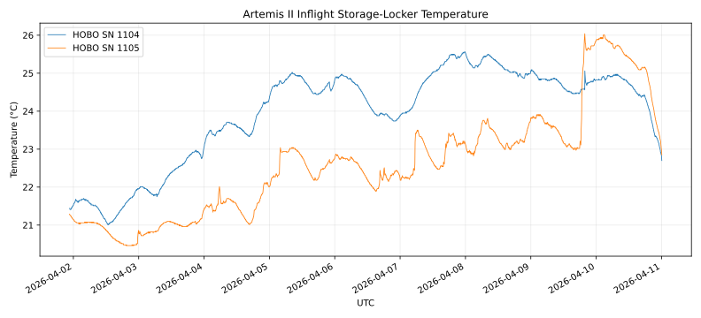
14. Robust statistics, change detection, and anomaly scoring
scripts/analysis/analyze_orion_environment_changes.py performs deterministic statistical analysis rather than calling every unusual point “machine learning.” Raw records are aggregated to 15-minute medians. Robust scale is estimated from the median absolute deviation using 1.4826 × MAD, with numerical floors to prevent quantized channels with near-zero local variation from producing meaningless infinite scores.
Change-point candidates compare the median of an hour before a candidate boundary with an hour after it. The score is the absolute median shift divided by a robust scale; the configured threshold is 8.0, with temporal separation applied so one transition does not produce a dense cloud of duplicate candidates. Local anomaly evidence uses a ±3-hour neighborhood on the 15-minute grid with a score threshold of 6.0, then clusters nearby candidates.
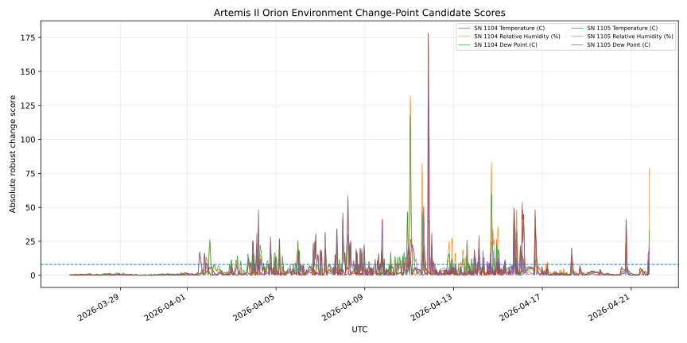
The final step is mission-context correlation. Candidate times are compared with launch, splashdown, power-down, recovery, cargo handover, and a documented logger-transfer window. A coincident operational boundary is context, not automatic causation. This separation between detection and interpretation is central to the project’s data-science methodology.
15. Space weather and radiation context
Lunar missions operate outside the persistent geomagnetic shielding available in low Earth orbit. Relevant hazards include sporadic solar energetic particle events and the more persistent galactic cosmic-ray background. Operational interpretation therefore depends on time, trajectory, environmental products, shielding assumptions, and the measurement/model type.
MissionLab separates a historical radiation-interface artifact from current model documentation. Phase 5B prepared 3,262 flight-derived trajectory rows for the NAIRAS 3.0 trajectory interface and explicitly recorded that no run was submitted, no run output was ingested, no Orion shielding depth was assumed, and no NAIRAS-derived Artemis II dose was reported. NASA CCMC now documents NAIRAS Version 4 as the current model family; its production changelog includes Version 4.15 released June 8, 2026. Current-model documentation is therefore used for Phase H explanation, while the older 3.0 artifact remains historical evidence rather than being silently relabeled as a Version 4 run.
The Phase H interaction uses ≥10 MeV proton flux in pfu and NOAA’s public Solar Radiation Storm S-scale as an external-environment reference. It does not assert that a selected scenario occurred on Artemis II, does not treat NOAA categories as NASA flight rules, and does not convert proton flux into crew dose. Artemis II carried six HERA active sensors inside Orion plus crew-worn active dosimeters; MissionLab does not claim their private/as-flown dose values here.
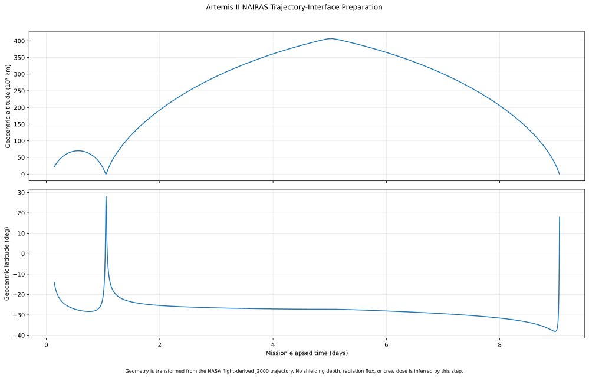
16. Lunar science and human observation
The lunar flyby created a science opportunity in addition to being a flight-dynamics event. MissionLab’s Phase 6 reconstruction registers NASA public images, postflight crew images, science audio, crew tablet annotations, and lunar-context products. Earthset is associated with public image time 2026-04-06 22:41 UTC; Earthrise with 23:22 UTC. Vavilov Crater/Hertzsprung Basin observations are retained with date-level timing where the curated source does not establish a precise instant.
The eclipse reconstruction is a useful example of geometry plus human observation. MissionLab derives totality from 2026-04-07 00:34:27.220 to 01:28:53.125 UTC, approximately 54.43 minutes, from the public trajectory and SPICE. NASA’s crew observations and imagery describe what was visually apparent during that geometry; the two evidence types complement one another without becoming the same thing.
Postflight science reporting reconciles five extremely faint impact flashes. The project preserves the later postflight count rather than an earlier preliminary count, and it explicitly refuses to treat a reference tablet-annotation visualization time as the time of an individual flash. This is evidence-aware data reconciliation rather than simple scraping.
17. Mission Control perspectives
The same event matters differently to different disciplines. MissionLab builds analytical lenses for FLIGHT, FDO, FAO, EECOM, COMM, SCIENCE, and ENGINEERING_SUPPORT. Where NASA documents a formal role, the role is identified as such; where MissionLab groups evidence into an analytical function such as COMM or ENGINEERING_SUPPORT, it says so instead of inventing a console call sign.
| Lens | Primary concern | Typical question |
|---|---|---|
| FLIGHT | Integrated mission state, crew safety, risk, cross-discipline coordination | Does this change mission or crew risk and who needs to coordinate? |
| FDO | Trajectory, targeting, geometry, dynamic phases | Where is Orion relative to the plan and is a correction required? |
| FAO | Timeline, crew activities, replanning | What planned activity moves if the mission state changes? |
| EECOM | Environment, life support, consumables, contingency capability | Is the crew environment safe and what redundancy remains? |
| COMM | Expected and unexpected link availability | Is this loss expected from geometry/plasma, or anomalous? |
| SCIENCE | Observation opportunities and science return | What can be observed at this geometry and what evidence was captured? |
| ENGINEERING_SUPPORT | Technical evidence, models, hardware behavior, root-cause boundaries | What explanation is supported, hypothesized, or still unavailable? |
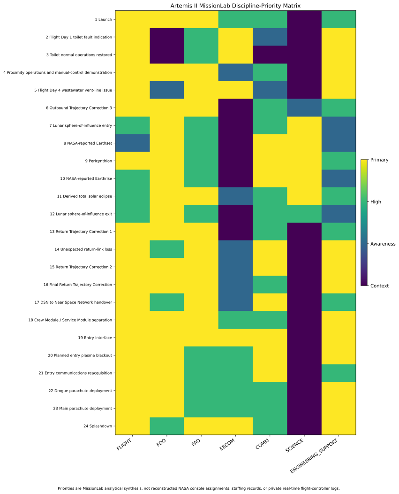
18. Public decision reconstruction
MissionLab represents public decision threads as detection → evidence → constraint → options → decision → action → outcome. This structure is useful because public mission reporting often describes several of those stages but not all of them. The method can show, for example, that an anomaly was detected, troubleshooting steps were taken, a contingency posture was adopted, and normal function later returned. It cannot turn those facts into a fabricated private transcript.
Three boundaries are enforced repeatedly. First, a troubleshooting action is not the same thing as a confirmed root cause. Second, an event occurring after another event does not prove causation. Third, a discipline being relevant to a decision does not prove it held final authority. Those rules let MissionLab discuss operations with more depth while avoiding the false precision common in speculative mission reconstructions.
19. Evidence taxonomy and provenance
Every important claim should be traceable to either a public source, a reproducible derivation, a stated model, or an explicit unknown. The repository uses structured JSON reference products so that source IDs, time precision, provenance classes, limitations, and operational interpretations travel with the result. This is data lineage applied to mission analysis.
Several permanent boundaries are encoded directly in the Phase 2 closure manifest: modeled atmospheric quantities are not raw telemetry; modeled dynamic pressure and Mach are not Orion sensor channels; modeled heating is not measured surface heat flux; expected lunar communications blackout is not an anomaly; a cancelled correction is not a failed burn; propulsion architecture is not burn-specific engine assignment; public OEM is not raw spacecraft telemetry; an OEM solution difference is not navigation error or measured burn delta-v; DSN tracking is not an onboard navigation sensor; and manual-mode labels do not disclose the control law.
20. Software and data architecture
The repository is a static-publication system backed by reproducible Python analysis. Data moves from public source acquisition through ingestion, normalization, validation, physics/statistical analysis, mission-event correlation, evidence/provenance products, figure generation, and browser publication. Structured JSON carries machine-readable conclusions and boundaries; CSV is used for tabular time-series/state data; SVG is used for generated engineering figures; browser JavaScript provides lightweight interaction without requiring a backend or paid API.
Representative code includes OEM ingestion, SPICE geometry, entry-frame transformation, atmospheric reconstruction, Mach/rarefaction/heating models, DSN geometry, maneuver correlation, GNC evidence synthesis, environmental normalization, robust change/anomaly analysis, lunar-science reconstruction, Mission Control decision-thread generation, and release validation. The public frontend remains deterministic and reviewable, with no runtime dependency on a hosted inference service.
21. Reproducibility and validation
The Phase 2 closure manifest records a successful full dependency-chain run from 2A through 2K with 58 observed successful steps. Individual subphases have validation scripts, and the release/publication layers have their own validators. The engineering goal is to fail loudly when a required input, expected record count, schema, or domain boundary is violated rather than quietly producing plausible-looking output.
Reproducibility does not mean every raw file is committed. Some large raw and processed inputs are intentionally gitignored; the manifest records required local inputs and the scripts that reproduce outputs. The tracked reference products and SVGs act as reviewable publication artifacts while the computational pipeline documents how they are produced.
22. Selected reconstruction results
| Result | Value | Evidence state |
|---|---|---|
| Launch | 2026-04-01 22:35:12 UTC | NASA reported |
| Lunar SOI entry | 2026-04-06 04:38:07.532302 UTC | MissionLab derived using chosen SOI boundary |
| Refined pericynthion | 2026-04-06 23:00:46.177998 UTC | MissionLab derived |
| Moon-center distance | 8,281.938 km | MissionLab derived |
| Mean-radius lunar altitude | 6,544.538 km | MissionLab derived |
| Moon-relative speed | ~1.381073 km/s | MissionLab derived |
| Lunar SOI exit | 2026-04-07 17:23:41.922211 UTC | MissionLab derived |
| Time inside chosen SOI | ~36.76 hours | MissionLab derived |
| Maximum Earth-center distance | 413,144.445 km | MissionLab derived |
| Earth-center occultation | 22:43:22.462 → 23:19:56.488 UTC | MissionLab geometric reconstruction |
| NASA public comms reference | LOS ~22:44 → planned acquisition ~23:25 | NASA reported, minute precision |
| Derived solar eclipse | 00:34:27.220 → 01:28:53.125 UTC, ~54.43 min | MissionLab OEM + SPICE geometry |
| RTC1 | 2026-04-08 00:03 UTC · ~1.6 ft/s | NASA reported reconstruction |
| RTC2 | 2026-04-10 02:53 UTC · ~5.3 ft/s | NASA reported reconstruction |
| RTC3 | 2026-04-10 18:53 UTC · ~4.2 ft/s | NASA reported reconstruction |
| Entry Interface | 2026-04-10 23:53 UTC | Public mission anchor |
| Splashdown | ~2026-04-11 00:07 UTC | Public minute-level sequence |
23. Limitations
This project cannot reconstruct what was never made public. It does not have access to internal Orion navigation filters, raw private telemetry channels, detailed onboard control laws, private Mission Control voice loops, complete flight rules, detailed thruster firing histories, private link budgets, crew personal dosimetry, or internal thermal instrumentation. Public trajectory products have their own solution history and are not equivalent to raw state-estimator output.
The physical models also have deliberate fidelity limits. The atmospheric reconstruction depends on public drivers and an engineering atmosphere model. Dynamic pressure, Mach, rarefaction, and heat flux are derived from those modeled and reconstructed quantities. The Sutton–Graves calculation is a stagnation convective correlation rather than a full reacting-flow/ablation solver. Lunar occultation models use simplified body geometry unless a more specific topocentric model is invoked. Uncertainty is therefore both numerical and epistemic: there is uncertainty in a calculation, and there are facts that the available evidence simply does not establish.
24. Engineering implications
The value of MissionLab is less about any single number than about integration. Flight dynamics becomes more useful when it explains communications geometry; GNC becomes clearer when it is connected to actual manual-piloting demonstrations; entry physics becomes more meaningful when Mach, density, dynamic pressure, heating, plasma blackout, parachutes, and recovery are taught as one sequence; environmental statistics become more credible when candidate anomalies are correlated with known operational context without being mislabeled as faults.
For software and data engineering, the project demonstrates source normalization, schema design, deterministic pipelines, reproducible scripts, numerical analysis, robust statistics, validation, data lineage, generated technical figures, and a dependency-free static publication layer. For aerospace and mission operations, it demonstrates an ability to reason across disciplines while preserving the difference between what is calculated, what is reported, what is modeled, and what remains unknown.
25. Future work and Artemis campaign context
Future work can improve model fidelity without changing the evidence philosophy: higher-fidelity uncertainty propagation, richer trajectory-solution comparison, additional ground-station geometry, deeper atmospheric sensitivity studies, more complete lunar-science product indexing, and stronger automated link/asset validation. Any new analysis should continue to preserve public-source precision and provenance.
Plume–surface interaction belongs to the broader Artemis campaign rather than the flown Artemis II mission, because Artemis II did not land. As of this October 2026 publication audit, NASA schedules Artemis III for a 2027 low-Earth-orbit demonstration of systems needed for later landings and targets Artemis IV in early 2028 for the first Artemis lunar landing. Campaign architecture can evolve, so MissionLab dates this statement and links the current NASA mission pages. PSI is therefore future lunar-landing engineering context, not an Artemis II flown event. Useful models would need to couple exhaust expansion in near-vacuum, rarefied gas dynamics, regolith entrainment, granular transport, ejecta trajectories, erosion, sensor obscuration, and hardware exposure. Depending on local Knudsen number and coupling, approaches may include continuum CFD, DSMC, plume models, and granular/particle methods. Validation would require lander geometry and thrust conditions, plume diagnostics, regolith properties, surface-change measurements, ejecta observations, and sensor data. MissionLab labels this as future-campaign context so it cannot be mistaken for an Artemis II event.
Source and artifact ledger
The exact public-source registries and source URLs used by the computational work are preserved in the repository reference products and source catalog. This report links to the most important review points rather than duplicating the full source ledger.
- Repository source catalog
- Phase 2 closure / evidence-boundary manifest
- GNC architecture reference
- Communications reconstruction
- Maneuver plan/execution reconstruction
- Convective-heating model specification
- Lunar observation reconstruction
- Mission Control perspectives
- NASA — Artemis II proximity operations complete (postflight/as-flown update)
- NASA — Artemis II live re-entry and splashdown updates
- NASA — current Artemis III / IV campaign architecture
- NASA — Artemis IV current mission page
- NASA CCMC — NAIRAS Version 4
- NOAA SWPC — Solar Radiation Storm S-scale
- NASA — Artemis II radiation sensors inside Orion
- ESA — European Service Module engines powering Artemis II
- NASA Artemis II launch gallery
- NASA Artemis II Preliminary Lunar Science Report
- NASA Johnson Space Center Mission Control Center
A2 MissionLab is an independent public-data study and is not an official NASA product. NASA/ESA source material retains its original ownership and attribution.